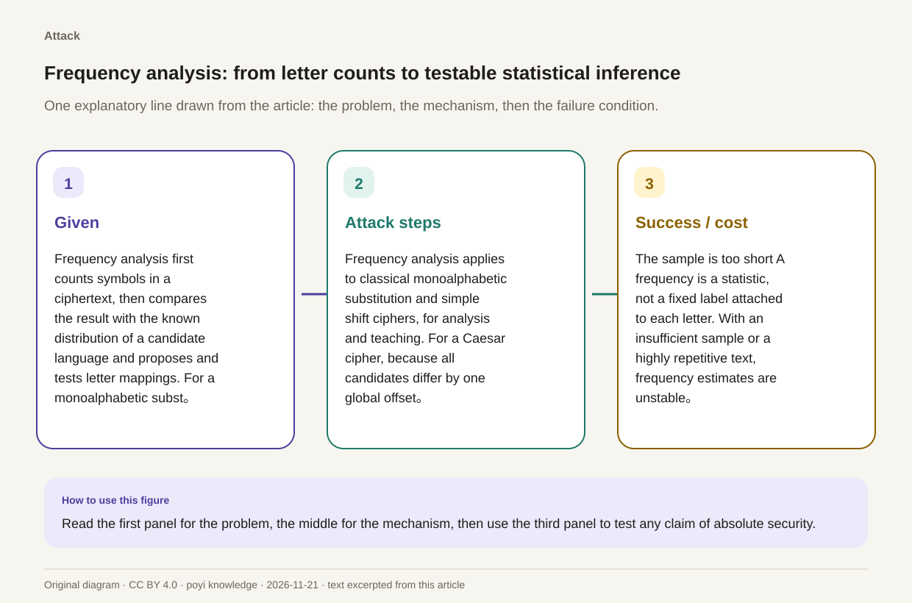
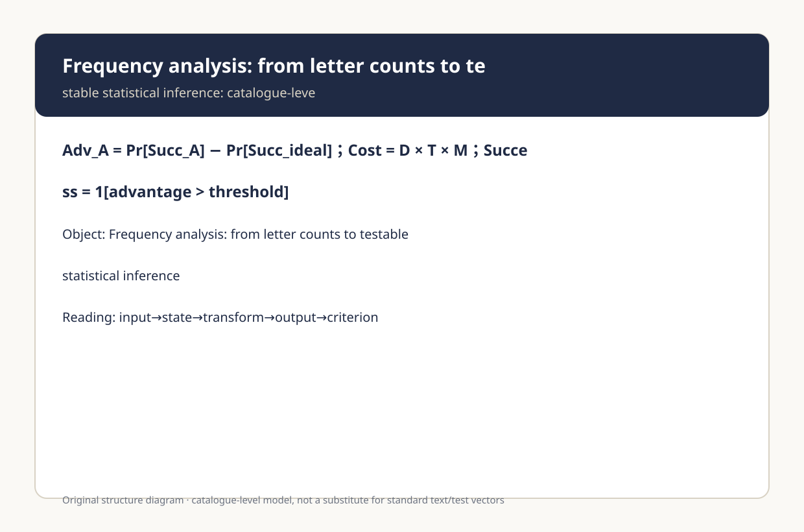

Principles
Attack: Frequency Analysis (频率分析). Frequency analysis first counts symbols in a ciphertext, then compares the result with the known distribution of a candidate language and proposes and tests letter mappings. For a monoalphabetic substitution, if π maps plaintext letters to ciphertext letters, the count of ciphertext symbol y equals the count of plaintext letter π⁻¹(y). The mapping only renames the counts; it does not change their multiset. The basic quantities are counts and relative frequencies. The count f_i is the number of occurrences of symbol i; for a sample of length L, the relative frequency is f_i/L. Unigram statistics look at individual symbols; digram and trigram statistics look at adjacent pairs and triples, such as TH, HE, ER, IN and AN in English. Combination statistics can provide more structure than single letters, but the sample must be long enough and the preprocessing rule must stay fixed. For a text of length L, the index of coincidence (IC) is
IC = Σ f_i(f_i − 1) / (L(L − 1)). It estimates the probability that two letters drawn at random from the text are equal. For 26 equally likely letters the theoretical value is 1/26≈0.03846; for natural English, HAC gives an estimate of about 0.0667. IC does not require knowing the mapping, so it can first indicate whether a text looks monoalphabetic, polyalphabetic or random. The chi-square goodness-of-fit statistic compares observed and expected counts:
χ² = Σ (O_i − E_i)² / E_i,
where O_i is the observed count and E_i = L·p_i is the expected count under candidate-language frequencies p_i. For 26 letters, with the expected distribution fixed by an external table and no parameters estimated from the sample, the degrees of freedom are 26−1=25. A smaller chi-square means the observed distribution is closer to the expected one. Decrypting under each of the 26 Caesar shifts and choosing the smallest χ² is a common automatic candidate-ranking method. But χ² is not the whole of frequency analysis, and it is not a law that automatically returns the right answer. It depends on assumptions about letter independence, sample length, language and preprocessing. It compares an overall distribution; it does not directly verify digrams, word shapes or meaning. Treating χ² as a synonym for the method hides those conditions. A workable order is: declare the counting unit and preprocessing; count single letters, repeated letters, digrams and trigrams; compare with a candidate language's frequency table and propose mappings; put the hypothesis back into the full text and check word shapes, context and consistency; use several statistics where needed. Every step can produce multiple candidates rather than one unique answer.

Why it matters
Natural language is redundant: letters, combinations and words do not occur uniformly. A monoalphabetic substitution preserves that non-uniformity and only renames the symbols. Frequency analysis exploits the fact that the ciphertext still carries statistical structure, not an algebraic weakness in one key.
It separates the size of the key space from whether the structure is hidden. A general monoalphabetic substitution has 26! possibilities, far more than the 26 keys of a Caesar cipher; yet an attacker need not enumerate 26!, because language statistics discard many meaningless candidates. This idea later grew into statistical cryptanalysis more generally: find an invariant, then shrink the candidate space.
Frequency analysis is also a teaching entry to statistical inference: observe, form a hypothesis, then test it with more evidence rather than declaring an answer from the tallest bar. It also reminds readers that a designer can resist analysis by changing the statistical structure, for example with polyalphabetic substitution, homophonic substitution or larger blocks.
Applications
Frequency analysis applies to classical monoalphabetic substitution and simple shift ciphers, for analysis and teaching. For a Caesar cipher, because all candidates differ by one global offset, the shape of the distribution is unchanged; the analyst only has to decide which offset best matches the language. For a general monoalphabetic substitution, several letter mappings must be determined together.
For a transposition cipher the role is different. Transposition changes letter positions without changing the total count of each letter identity, so unigram frequencies survive. That can help identify the language and nature of the text, but counts alone cannot recover the permutation. HAC uses this as one way to recognize simple transposition.
For a polyalphabetic cipher, the same plaintext letter can become different ciphertext letters at different positions, flattening unigram frequencies. Direct comparison with a single-letter table usually fails; the analyst must first estimate the period and then split the text into columns. Kasiski's method and IC autocorrelation are two related but distinct routes; they are not synonyms for frequency analysis but tools for handling polyalphabetic structure. The worked example shows a period-5 Vigenère ciphertext whose global IC is near random while each of the five columns has an IC near English.
For modern block ciphers, frequency analysis cannot simply be transferred. With a large block, tabulating every possible block unit is infeasible; HAC explicitly presents large block size as a condition that precludes simple statistical analysis. Modern cipher security arguments and attack models are also much more elaborate than classical monoalphabetic analysis.

Limits & attacks
A frequency is a statistic, not a fixed label attached to each letter. With an insufficient sample or a highly repetitive text, frequency estimates are unstable, and the most frequent letter need not be the most frequent letter of the language. In the 15-letter ZEBRAZEBRAZEBRA, Z, E, B, R and A each occur three times, and IC is 0.1429, well above the English value of 0.0667. This is not because the text is more English; it is because repetition dominates. When chi-square ranks Caesar shifts for this text, the correct key can rank far down the list. The calculation below demonstrates this failure.
Frequency tables come from a particular language and corpus. Technical prose, lists of names, abbreviations, code, mixed languages or specially preprocessed text can deviate from a general table. If the language is wrong, the whole comparison is meaningless. Even within English, genre and period change the distribution; HAC labels its Figure 7.5 estimate as coming from 1964 English text.
Homophonic substitution uses several symbols for one high-frequency plaintext letter, deliberately flattening the distribution. Polyalphabetic substitution uses different mappings at different positions. Both break the premise that one ciphertext symbol corresponds to one plaintext letter forever. HAC notes that homophonic substitution complicates simple frequency analysis, while sufficient ciphertext may still permit analysis combined with other statistical properties. It is not absolute immunity.
Whether text is uppercased, whether spaces remain, whether punctuation is removed and whether accented letters are folded all change counts and sample length. Two apparently identical “letter frequencies” can come from different rules. Any reported result must state the rule, or the numbers are not comparable.
Chi-square compares an overall distribution only. Two different shifts can produce similar χ² values; a short text can let a wrong candidate win; and the true distribution can differ systematically from the expected table. Treating the minimum χ² as already broken is overreach. Use χ² to rank candidates, then cross-check with word shapes, digrams, context and known plaintext.
The fact that frequency analysis works on classical ciphers does not mean it directly breaks AES or RSA. Modern block-cipher block spaces, round functions and key sizes are different; HAC's note on large blocks preventing statistical analysis is part of this boundary. Frequency analysis can have analogies in side channels, traffic analysis or statistical testing, but those are different attack models and must not be conflated.
History
Al-Kindi's ninth-century Risāla fī Istikhrāj al-muʿammā (the survey prints it "Risalah fi Istikhraj al Mu'amma") is commonly treated as one of the earliest extant treatises on cryptanalysis. The survey of Arabic cryptology consulted for this batch states that al-Kindi counted Arabic letter frequencies in a text of 3,667 letters and then introduced the technique later known as frequency analysis. The same survey identifies the KACST/KFCRI 2003 volume Arabic Origins of Cryptology, Volume One as an edition and study of the treatise. This article reports it as a claim of the cited survey, because the direct object read in this batch was the survey and its citations, not the manuscript itself.
HAC's notes attribute part of the modern terminology and IC history to Friedman: a 1920 Riverbank Publication no. 22 discussed cryptanalysis using the index of coincidence, and Friedman coined the term “cryptanalysis” in 1920. Kasiski's method was originally published in 1863. HAC places these methods within a structural comparison of classical ciphers rather than treating them as equivalent techniques.
This history shows frequency analysis as a multilingual, centuries-long statistical practice rather than a single invention on one day. This article states only the attributions and dates the sources support; it does not expand a priority dispute into unverified claims.
Worked example & verification
Formal model and reproduction steps
Frequency Analysis: the registered public parameters, key material or randomness, and message are mapped through the stated transformation to an output checked against the registered criterion. The worked example is a structural reproduction, not a new test vector; parameter ranges, standard versions and implementation details remain source-bound.
References
- Wikipedia search entry for 频率分析. https://zh.wikipedia.org/w/index.php?search=%E9%A2%91%E7%8E%87%E5%88%86%E6%9E%90
- Handbook of Applied Cryptography (Menezes, van Oorschot, Vanstone). https://www.cacr.math.uwaterloo.ca/hac/